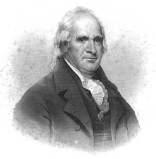

| George Clinton Born: 26-Jul-1739
Birthplace: Little Britain, NY
Died: 20-Apr-1812
Location of death: Washington, DC
Cause of death: unspecified
Remains: Buried, Kingston, NY
Gender: Male
Race or Ethnicity: White
Sexual orientation: Straight
Occupation: Military, Politician
Party Affiliation: Democrat-Republican Nationality: United States
Executive summary: US Vice President, 1805-12 The American soldier and political leader George Clinton was born at Little Britain, Ulster (now Orange) county, New York, on the 26th of July 1739. His father, Charles Clinton (1690-1773), who was born of English parents in County Longford, Ireland, emigrated to America in 1729, and commanded a regiment of provincial troops in the French and Indian War. The son went to sea at the age of sixteen, but, finding the sailor's life distasteful, joined his father's regiment and accompanied him as lieutenant in the expedition against Fort Frontenac in 1758. After the war he practiced law in his native town and held a number of minor civil offices in Ulster county. From 1768 to 1775 he sat in the New York provincial assembly, and in the controversies with Great Britain zealously championed the colonial cause. In 1774 he was a member of the New York committee of correspondence, and in 1775 was chosen a member of the second Continental Congress. In December of this year he was appointed a brigadier-general of militia by the New York provincial congress, and in the following summer, being ordered by George Washington to assist in the defense of New York, he left Philadelphia shortly after voting for the Declaration of Independence, but too soon to attach his signature to that document. He had also been chosen a deputy to the provincial congress (later the state convention) for 1776-1777, but his various other duties prevented his attendance.
General Clinton took part in the battle of White Plains (October 28th, 1776), and later was charged with the defense of the Highlands of the Hudson, where, with De Witt Clinton, in October 1777, he offered a firm but unsuccessful resistance to the advance of Sir Henry Clinton. In March of this year he had been appointed by Congress a brigadier-general in the Continental army, and he thus held two commissions, as the state convention refused to accept his resignation as brigadier-general of militia. So great was Clinton's popularity at this time that at the first election under the new state constitution he was chosen both Governor and Lieutenant Governor; he declined the latter office, and on the 30th of July 1777 entered upon his duties as Governor, which were at first largely of a military nature. In 1780 he took the field and checked the advance of Sir John Johnson and the Indians in the Mohawk Valley. In his administration Clinton was energetic and patriotic, and though not possessing the intellectual attainments of some of his New York contemporaries, he was more popular than any of them, as is attested by his service as Governor for eighteen successive years (1777-1795), and for another triennial term from 1801 to 1804. In the elections of 1780, 1783 and 1786 he had no opponent. In 1800-1801 he was a member of the assembly. In the struggle in New York over the adoption of the Federal Constitution he was one of the leaders of the opposition, but in the state convention of 1788, over which he presided, his party was defeated, and the Constitution was ratified. In national politics he was a follower of Thomas Jefferson, and in state politics he led the faction known as "Clintonians", which was for a long time dominant. In 1789, 1792 and 1796 Clinton received a number of votes in the electoral college, but not a sufficient number to secure him the Vice Presidency, which was then awarded to the recipient of the second highest number of votes. In 1804, however, after the method of voting had been changed, he was nominated for the Vice Presidency by a Congressional caucaus, and was duly elected. In 1808 he sought nomination for the Presidency, and was greatly disappointed when this went to James Madison. He was again chosen as Vice President, however, and died at Washington before the expiration of his term, on the 20th of April 1812. He was buried in the Congressional Cemetery, from which in May 1908 his remains were transferred to Kingston, NY. His casting vote in the Senate in 1811 defeated the bill for the renewal of the charter of the Bank of the United States.
Governor of New York 1777-95
Governor of New York 1801-4
U.S. Vice President 1805-12
Do you know something we don't?
Submit a correction or make a comment about this profile
Copyright ©2007 Soylent Communications
|